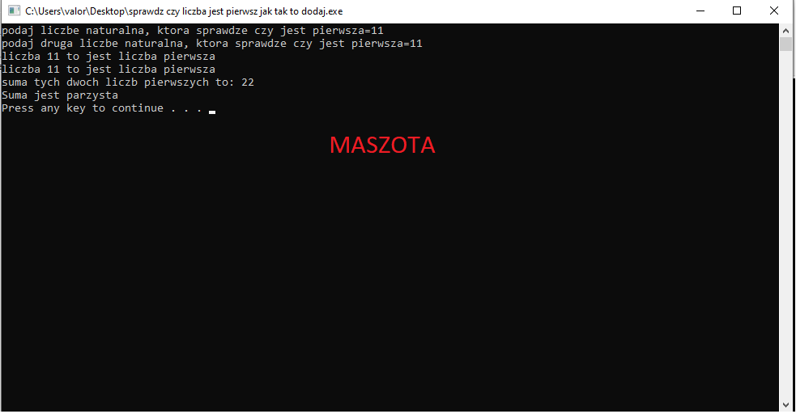

#include <cstdlib> #include <iostream> #include <math.h> using namespace std; int main(int argc, char *argv[]) { cout<<"podaj liczbe naturalna, ktora sprawdze czy jest pierwsza="; int pierwsza; int druga; int k=0; int trzecia; cin>>pierwsza; cout<<"podaj druga liczbe naturalna, ktora sprawdze czy jest pierwsza="; cin>>druga; for(int i=2;i<=sqrt(pierwsza);++i) { if ((pierwsza) % i==0) { k=1; cout<<"liczba "<<pierwsza<<" to nie jest liczba pierwsza jest podzielna przez " <<i<<"\n"; } } if ( k==0) { cout<<"liczba "<<pierwsza<<" to jest liczba pierwsza"<<"\n"; } for(int i=2;i<=sqrt(druga);++i) { if ((druga) % i==0) { k=1; cout<<"liczba "<<druga<<" to nie jest liczba pierwsza jest podzielna przez " <<i<<"\n"; } } if ( k==0) { cout<<"liczba "<<druga<<" to jest liczba pierwsza"<<"\n"; trzecia =pierwsza+druga; cout<<"suma tych dwoch liczb pierwszych to: "<<trzecia<<endl; if(trzecia%2==0){ cout<<"Suma jest parzysta"<<endl; } else{ cout<<"Suma nie jest parzysta"; } } system("PAUSE"); return EXIT_SUCCESS; }
